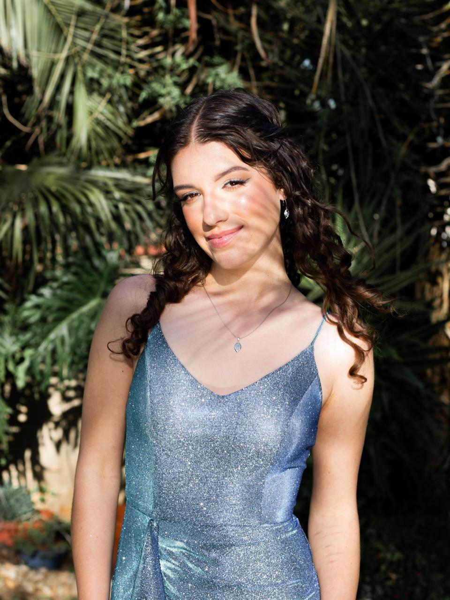
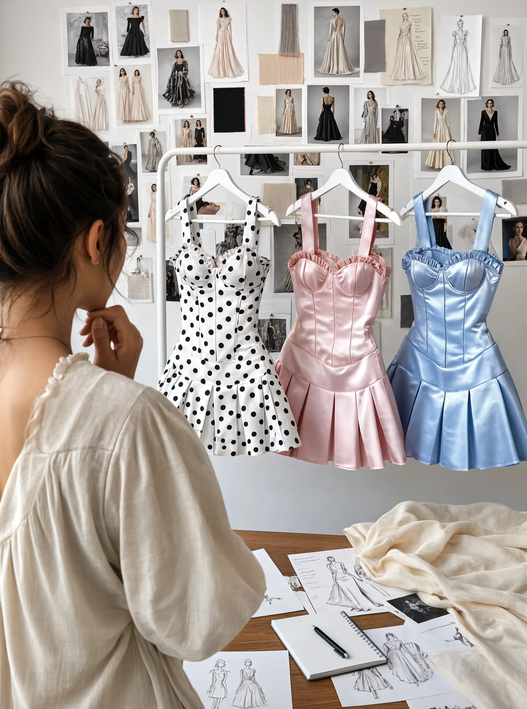

Behind
Pretty Absurd.
An independent designer making clothes that look like they shouldn't exist — and yet, once you see them, you can't imagine they don't.

Clothes that belong in a film you can't quite place.
Pretty Absurd started with one question: why do women's clothes either fight to be invisible or try too hard to be seen?
Kaylah's answer was three dresses. Each one built around the same structure — a corset bodice, a sweetheart neckline, a pleated skirt — but each one telling a completely different story. Pink satin that feels like a Barbie dream. Ice blue that belongs on a catwalk in Paris. Polka dots that make you think of Marilyn Monroe on a rooftop.
The name says it all. Pretty Absurd is fashion that's deliberately, joyfully out of place. Clothes that make people stare — not because they're strange, but because they're exactly right in all the wrong ways.
"Pretty Absurd is built on one idea: clothes should make you feel like the most interesting person in the room. Not the most tasteful. The most interesting."
Fashion has spent a long time telling women to choose — be feminine or be taken seriously, be playful or be polished. Pretty Absurd doesn't believe in that choice. The corset boning is serious. The polka dots are playful. Both are true at the same time, and that's exactly the point.

Every seam placed with intention.
The chaos is in the wearing, not the making.
Structure first
Every dress starts with the bones. The corset boning defines the silhouette before a single piece of satin is cut. Structure is never an afterthought.
Fabric as character
The fabric is never just a covering — it's the personality of the piece. Satin catches the light differently. Polka dots change the conversation before you say a word.
Details that earn their place
The ruffle at the sweetheart neckline. The lacing at the back. The invisible zip at the side. Nothing is there for decoration — every detail does a job.
Three dresses. Launching September 2026.